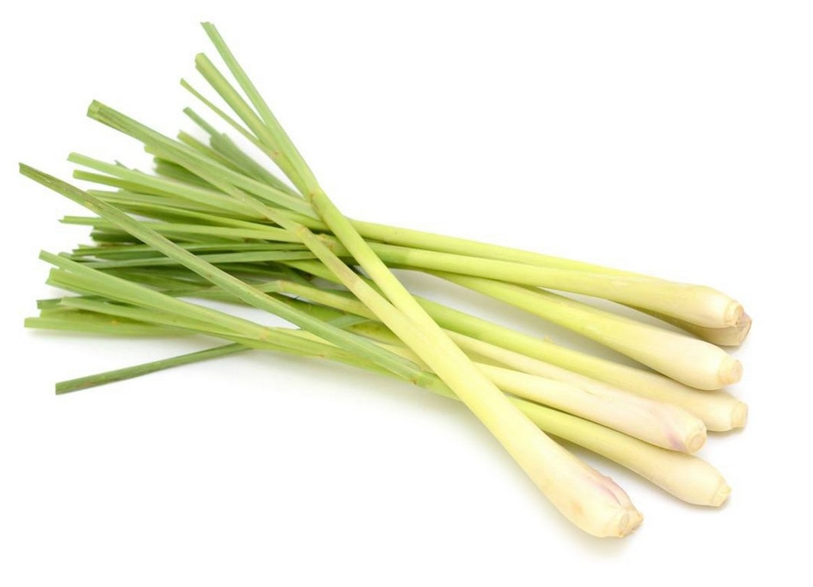

1. Seasons for Growing Lemongrass

Lemongrass is a tropical plant that thrives in warm climates. Here’s how to manage its growing seasons:
- Spring: Ideal for planting lemongrass in temperate regions, as it requires warm temperatures to establish.
- Summer: Lemongrass grows vigorously during the summer months in tropical and subtropical climates.
- Fall: In cooler climates, you can continue growing lemongrass indoors or in a greenhouse to protect it from frost.